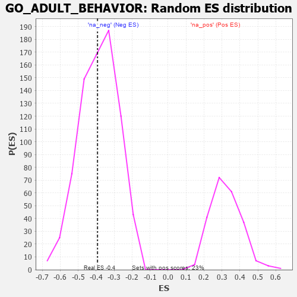

| | | Dataset | 7d |
| Phenotype | NoPhenotypeAvailable |
| Upregulated in class | na_neg |
| GeneSet | GO_ADULT_BEHAVIOR |
| Enrichment Score (ES) | -0.39242768 |
| Normalized Enrichment Score (NES) | -1.0203521 |
| Nominal p-value | 0.44702843 |
| FDR q-value | 0.8450775 |
| FWER p-Value | 1.0 |
Table: GSEA Results Summary
 Fig 1: Enrichment plot: GO_ADULT_BEHAVIOR
Fig 1: Enrichment plot: GO_ADULT_BEHAVIOR
Profile of the Running ES Score & Positions of GeneSet Members on the Rank Ordered List
| PROBE | GENE SYMBOL | GENE_TITLE | RANK IN GENE LIST | RANK METRIC SCORE | RUNNING ES | CORE ENRICHMENT | | 1 | HTRA2 | | | 527 | 0.621 | -0.0072 | No |
| 2 | BRS3 | | | 547 | 0.614 | 0.0488 | No |
| 3 | NTAN1 | | | 1120 | 0.459 | 0.0206 | No |
| 4 | HIPK2 | | | 2389 | 0.247 | -0.1155 | No |
| 5 | BTBD9 | | | 2407 | 0.245 | -0.0943 | No |
| 6 | CDK5 | | | 3480 | 0.080 | -0.2216 | No |
| 7 | WDR47 | | | 3823 | 0.023 | -0.2624 | No |
| 8 | GLRA1 | | | 3957 | 0.001 | -0.2790 | No |
| 9 | UNC79 | | | 4184 | -0.039 | -0.3037 | No |
| 10 | PAX5 | | | 4255 | -0.051 | -0.3077 | No |
| 11 | EPS8 | | | 4474 | -0.088 | -0.3267 | No |
| 12 | SDK1 | | | 4627 | -0.124 | -0.3341 | No |
| 13 | DRD2 | | | 5088 | -0.221 | -0.3709 | Yes |
| 14 | SCN1A | | | 5260 | -0.261 | -0.3676 | Yes |
| 15 | PTEN | | | 5262 | -0.261 | -0.3428 | Yes |
| 16 | EPHA4 | | | 5273 | -0.265 | -0.3188 | Yes |
| 17 | GRIN1 | | | 5381 | -0.291 | -0.3046 | Yes |
| 18 | PRLHR | | | 5705 | -0.377 | -0.3093 | Yes |
| 19 | GLRB | | | 5776 | -0.398 | -0.2802 | Yes |
| 20 | BBS4 | | | 5806 | -0.407 | -0.2450 | Yes |
| 21 | PPT1 | | | 6038 | -0.485 | -0.2279 | Yes |
| 22 | IFT80 | | | 6135 | -0.515 | -0.1910 | Yes |
| 23 | NPC1 | | | 6364 | -0.602 | -0.1623 | Yes |
| 24 | BBS2 | | | 6383 | -0.608 | -0.1067 | Yes |
| 25 | GHSR | | | 6937 | -0.894 | -0.0912 | Yes |
| 26 | CTNS | | | 7044 | -0.965 | -0.0126 | Yes |
| 27 | NPY | | | 7465 | -1.356 | 0.0637 | Yes |
Table: GSEA details [plain text format]

Fig 2: GO_ADULT_BEHAVIOR: Random ES distribution
Gene set null distribution of ES for GO_ADULT_BEHAVIOR